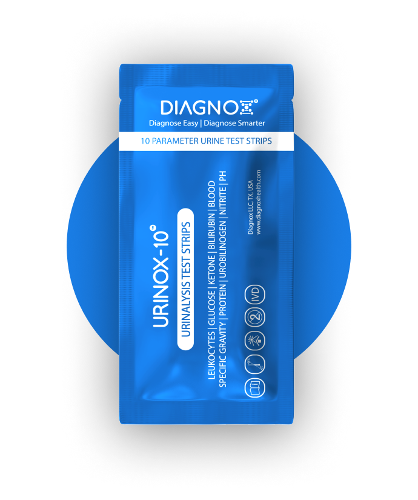

Urinox-10
Individually packaged 10 parameters urinalysis reagent strips for diagnosis and monitoring of metabolic or systemic diseases that affect kidney functions, endocrine disorders, or diseases of the urinary tract.

5.0
As a diabetic who frequently suffers UTIs, I found Urinox-10 to be easy to use and reasonable in price. Other brands deteriorate rapidly, once opened. Each test strip is individually sealed to prevent this problem.
Bonnie
Happy customer
5.0
As a diabetic who frequently suffers UTIs, I found Urinox-10 to be easy to use and reasonable in price. Other brands deteriorate rapidly, once opened. Each test strip is individually sealed to prevent this problem.
Bonnie
Happy customer